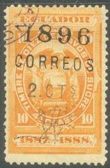
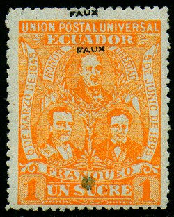
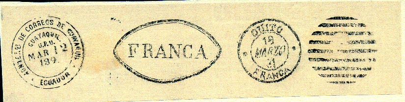
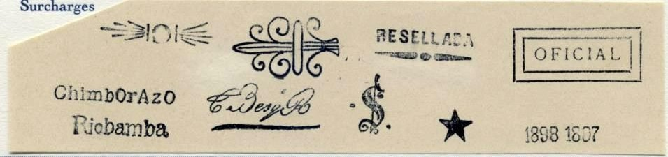

Return To Catalogue - Equador 1865-1895
Note: on my website many of the
pictures can not be seen! They are of course present in the
catalogue;
contact me if you want to purchase it.

1 c on 1 c grey (1887/88 issue) 1 c on 1 c orange (1893/94) 1 c on 4 c brown (1887/88) 2 c on 2 c red (1887/88) 2 c on 2 c blue (1893/94) 2 c on 10 c orange (1887/88) 5 c on 10 c orange (1887/88) 5 c on 10 c orange (1893/94) 10 c on 4 c brown (1887/88) 10 c on 4 c brown (1891/92)
1 c green 2 c red 5 c blue 10 c brown 20 c orange 50 c blue 1 S brown 5 S violet
These stamps were printed by Seebeck, who made a large number of reprints.
Surcharged

'CINCO CENTAVOS' on 20 c orange 'DIEZ CENTAVOS' (red) on 50 c blue Provisional overprint '1897 y 1898' 2 c red 20 c orange
These stamps in olive overprinted in red 'FRANQUEO OFFICIAL'
in a circle (Official stamps)
1 c olive 2 c olive 5 c olive 10 c olive 20 c olive 50 c olive 1 S olive 5 S olive
(Reduced sizes)
1 c red 2 c blue 5 c green 10 c yellow 20 c red 50 c violet 1 S orange Provisional overprint '1897-1898'
(Reduced size)
1 c red 2 c bleu 10 c yellow Provisional overprint 'CORREOS PROVISIONALES' and arms in circle

Genuine overprint on the left, forged overprint on the right hand
side.
1 c red 2 c blue 5 c green 10 c yellow
Forgeries of these stamps:


Similar forgeries of the values 5 c, 10 c and 50 c can be found on Bill Claghorn's forgery site: http://members.tripod.com/claghorn1p/Ecuador/Ecu65.htm. I've also seen the 1 c and 20 c. Usually they don't have the 'faux' overprint as in the above forgeries. These forgeries are all printed very badly (compared to the genuine stamps). I've been told they were made by the forger N. Imperato of Genoa in Italy in 1918. I've seen them with a forged "ADN???? DE CORREOS DE GUAYAQUIL ECUADOR GUAYAQUIL U.P.U. MAR 12 189." cancel that can also be found in the Fournier Album:


(Reduced size)
1 c green 2 c orange 5 c red 10 c brown 20 c yellow 50 c blue 1 S grey 5 S brown Surcharged
(Reduced size)
'UN CENTAVO' on 2 c orange (1899) 'CINCO CENTAVOS' on 10 c brown (1899)
(Reduced sizes)
1 c blue and black (Torres) 1 c red and black (1901) 1 c red and black (Roca, 1907) 1 c red and black (border changed, 1911) 1 c orange (1915) 1 c blue (1925) 2 c lilac and black (Calderon) 2 c green and black (1901) 2 c blue and black (Noboa, 1907) 2 c blue and black (border changed, 1911) 2 c green (1915) 2 c violet (1925) 3 c orange and black (Robles, 1907) 3 c orange and black (border changed, 1911) 3 c black (1915) 4 c red and black (Valdez, 1915) 5 c red and black (Montalvo) 5 c lilac and black (1901) 5 c lilac and black (Urvina, 1907) 5 c red and black (1911) 5 c violet (1915) 5 c red (1925) 10 c lilac and black (Mejia) 10 c blue and black (1901) 10 c blue and black (Moreno, 1907) 10 c blue and black (border changed, 1911) 10 c blue (1915) 10 c green (1925) 20 c green and black (Espejo) 20 c grey and black (1901) 20 c green and black (Carrion, 1907) 20 c green and black (border changed, 1915) 50 c red and black (Carbo) 50 c blue and black (1901) 50 c violet and black (Espinoza, 1907) 50 c violet and black (border changed, 1915) 1 S yellow and black (Olmedo) 1 S brown and black (1901) 1 S green and black (Borrero, 1907) 1 S green and black (border changed, 1911) 5 S lilac and black (Moncayo) 5 S grey and black (1901)
The stamps of 1901 exist with various security overprints (after stamps had been stolen). I know of 17 different overprints. These overprints also exist forged (among them by Fournier). The 1 c orange exists with overprint 'CASA DE CORREOS' (issued 1919).

5 c with security overprint.
(Reduced size)
1 c red and black 2 c blue and black 5 c yellow and black (larger size) 10 c red and black 20 c blue and black 50 c yellow and black (larger size)
(Reduced sizes)
1 c brown (train) 2 c blue and black (triangular design) 5 c red and black (triangular design) 10 c yellow and black (triangular design) 20 c green and black (triangular design) 50 c grey and black (triangular design) 1 S black (mountain view)
(Reduced size)
1 c green (Vallejo) 2 c blue (Espejo) 3 c orange (Ascasubi) 5 c red (Salinas) 10 c brown (Alegre) 20 c grey (Montufar) 50 c red (Morales) 1 S green (Quiroga) 5 S violet (building) Surcharged
(Reduced size)
'CINCO CENTAVOS' on 50 c red
(Reduced sizes)
Fiscal stamps of 1905/06 1 c on 5 c green 5 c on 20 c blue 5 c on 25 c violet Fiscal stamps of 1907/08 1 c on 5 c green 5 c on 20 c blue 5 c on 25 c violet Fiscal stamp of 1909/10 5 c on 20 c blue
1 c on 1 S green 2 c on 2 S red 2 c on 5 S blue 2 c on 10 S yellow
1 c green 2 c red 3 c brown 4 c green 5 c blue 6 c red 7 c brown 8 c green 9 c red 10 c blue 15 c grey 20 c brown 30 c violet 40 c brown 50 c green 60 c blue 70 c grey 80 c yellow 90 c green 1 S blue

1 c olive 2 c green 20 c brown 2 S brown 5 S blue
(Sorry, no picture available yet)
1 c green 2 c green 5 c green 10 c green 20 c green 50 c green 100 c green
From 1886 onwards many postage stamps were overprinted with 'OFICIAL' or 'FRANQUEO OFICIAL'. Be careful, forgeries of these overprints exist, example:

(Forged overprint)
The following overprinted stamp 'TELEGRAFOS' was only used for postal services and not for telegraphic purposes:
(Reduced size)
Other stamps of 1892 with overpritn 'TELEGRAFOS' were actually used as telegraph stamps, the values 1 c, 2 c, 5 c, 10 c, 20 c, 50 c, 1 S and 5 S exist with this overprint.
Three stamps (10 c, 20 c and 40 c) in the design of the 1894 stamps, but with inscription 'TELGRAFOS DEL ECUADOR' were issued in 1894.
Other design:
(1893 issue, these three values only)

(1900 issues, these three values were issued only)
Besides these stamps, there are also some fiscal stamps with overprint 'TELEGRAFOS'.
Fournier (a forger) has made forgeries of Ecuador. After he died an album with forgeries was made to enable stamp collectors to distinguish his forgeries. He used cancels that always resembled the cancels used by the country he forged. Here a copy of a page of this album with the cancels for Equador:
1) "ADN???? DE CORREOS DE GUAYAQUIL ECUADOR GUAYAQUIL U.P.U. MAR 12 189."; I've seen it on forgeries of the 1896 issue.
2) "FRANCA" (I have seen this cancel being used on forgeries of Buenos Aires, so I think it has been misplaced in the Founier Album).
3) "QUITO 18 MARZO 81 FRANCA"
4) 9 lines arranged to form a circle

Examples:
(Reduced sizes)

50 s on 10 c gree, 75 s on 15 c red, 1 S on 20 c grey, 1 1/2 S on 30 c blue, 3 S on 60 c brown
Forgery of such a stamp


{kind=link}
{kind=link}